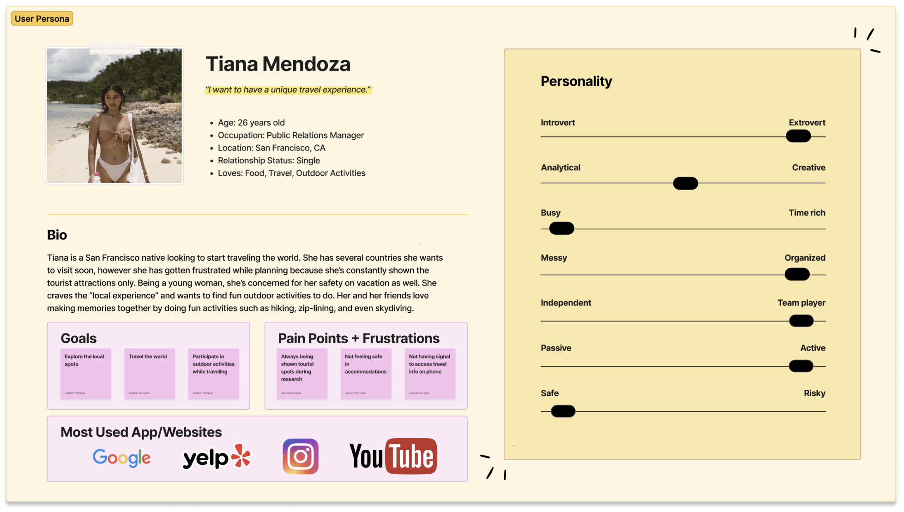

An app encouraging travelers to live like a local on vacation.

Research lays principal groundwork for developing solutions in later stages. To ensure the research stays on track and better guide the responsive website design later, it is crucial to organize a research plan before beginning the research phase. I listed research goals, research questions, assumptions, methodologies, participants, and timeline in my research plan.
A good starting point for research is getting familiar with the market. With market research, UX designers are able to establish who the audience is, essential trends and ultimately, what we know and do not know. The results will provide a great foundation for the proto persona as well as the user interviews.
Gathering information from similar platforms in regards to their strengths and weaknesses will help me identify features to incorporate and improve on Local Lens. I looked at 2 direct competitors, Expedia and TripAdvisor, and 2 indirect competitors, booking directly and a travel agency.
In order to visualize a typical Local Lens user, a proto persona was created based on the secondary research. This way I am able to humanize the user and create better ways to help them.

For this study, I conducted 5 interviews via phone call with 23 questions (with 2 extra introductory questions) regarding their decision making process, pain points, and general experience with travel planning. I found that the main priorities in a travel experience include safety, outdoor activities, and local experiences.
To make sense of the interview data, I created an affinity diagram. This tool is crucial when trying to discover underlying trends and themes from the interviews.

From the data collected from the market research, competitor analysis and user interviews, an empathy map was developed. Empathy maps help designers identify the user’s thoughts and feelings.
Equipped with more information about the user’s needs, thoughts, and goals, I create the user persona to represent key audience segments. The user persona helps keep the focus of the app’s ultimate goal.
A good user insight statement sets the foundation for a successful product and service development. It’s best developed after the primary and secondary research, as it’s used to create a deeper understanding of the user persona through storytelling.
With a problem statement, UX designers are able to identify a vision and the strategies that will help form the solution.
The “I Like, I Wish, What If” brainstorming method is an essential part of the ideation phase. It looks at the product in 3 stages: present (I like...), near future (I wish...), and distant future (what if...). From the list, the best ideas are voted on to be included into the feature prioritization matrix.
The feature prioritization matrix pinpoints the high priority problems to tackle first. UX designers benefit most from this prioritization method because it addresses both the user’s needs as well as the business needs.
To ensure that a product is centered around the user’s needs and values, a value proposition statement is created. It provides the answer to why someone should do business with you. It’s important for UX designers to be clear about their product and user’s needs.
In addition to helping create a visualization of a user’s interaction with a product, user scenarios are great for recognizing the user’s motivations and needs. It shows how users may use the product to achieve their goal.
Building on the storytelling, I mapped user flows whose scenarios correspond to the established tasks. This process helps me walk in an individual user's shoes, and think through different scenarios that this user might encounter. Below is the user flow for Tiana when she wants to book a tour for her vacation. A complete user flow can be viewed here.
After creating a user flow, I began sketching low-fidelity screens for Local Lens. Through sketching, I’m able to jot down my ideas quickly. In addition, it provides me a chance to visualize my ideas before digitizing them into mid or high fidelity prototypes.
Once I had a visual direction of the layout, I began to add more details and precisions to the sketches by turning them into mid-fidelity wireframes. Mid-fidelity wireframes allow me to focus on the visual consistency and hierarchy before applying styles. In these wireframes, I tried to incorporate common design patterns that have been tested on our competitors' product, or included elements that directly address users' goals, needs, frustrations, and motivations. As I am designing an app for iOS system, I referred to the Human Interface Guidelines of Apple in the design process.
To get feedback for my mid-fidelity prototype, I finalized a guerrilla user test plan. The main goal of the test was to identify the negative and positive experiences while using Local Lens.
My target audience for the user tests were travelers of ages 18+ seeking locally recommended accommodations and activities to book for their next vacation. I was able to conduct in-person and remote usability testing with 3 participants, and created notes for each participant based on my observation of their interaction with the prototype. Before the test, I asked each participant to talk through their thought process and to tell me their confusions.
In order to fully analyze the research and rank the feedback, I broke down the findings into three sections: observations, inferences, and recommendations. Observations is simply jotting down each comment, interferences is prioritizing each comment, and recommendations is the final changes that need to be made based on the results.
Once the user feedback from the mid-fi prototype was analyzed, changes in regards to the boldness of buttons and labels as well as additional features (filters and language options) were made. All of the recommendations developed through the results analysis were added to the new high-fidelity prototype. From there, the high-fidelity prototype was brought to life with color, text and photos.
Being that this was my first prototype, I did not realize that being too ambitious with the app features can creep on you during the wireframe development process. There were times when I would lose focus on which features I should concentrate on first. In addition, it was difficult to keep track of all the features I wanted to include, which created more stress and confusion. From this process, I learned to always refer back to the user research data to remind yourself of the purpose of the app.